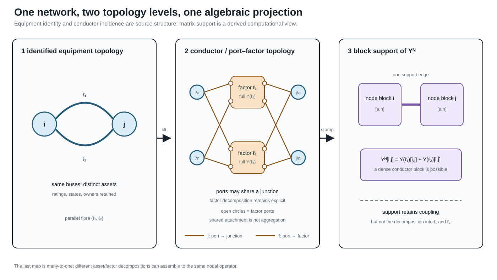
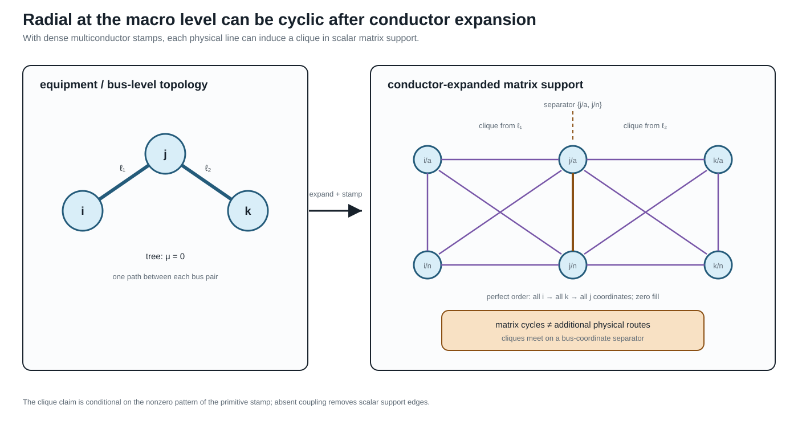

Two topology levels and the nodal projection
Page status: literature-backed definitions with executable structural and recovery witnesses; inverse recovery is reported by explicit identifiability status and remains non-canonical without additional structure.
The missing middle between a one-line diagram and $\mathbf Y^{\mathrm N}$
Power engineers routinely move between a bus–branch diagram, a multiconductor circuit, and a nodal admittance matrix. Those three objects are related, but they do not have the same vertices, edges, or cycles. Calling all three the network graph hides two distinct topology levels and a many-to-one algebraic projection:
- the equipment/terminal topology records identified equipment and its high-level attachments;
- the conductor/port–factor topology records the electrical terminals, junctions, conductor coordinates, and constitutive factors;
- the nodal-operator support graph records which retained voltage coordinates are coupled by the assembled matrix.
The first two are retained source structure in this book. The third is a derived computational view. The asset/dependency model remains an orthogonal companion to both: ownership, protection, common-mode failure, and maintenance are not entries of a nodal admittance matrix.
The same boundary applies to formulation choice. A compound $\mathbf Y^{\mathrm N}$ is an exact target for a declared class of fixed linear factors, but it is not a universal representation of a power network. General power-network studies may need modified nodal or sparse-tableau variables, branch currents, multi-terminal factor relations, switch states, controls, and limits that are not recoverable from nodal support alone. See Circuit formulations and the lowering boundary for the guarded compilation alternatives.

The figure uses parallel lines because they expose the loss immediately. Both identified factors attach to the same electrical junction coordinates, and their matrix contributions occupy the same nodal block. The assembly preserves their combined linear boundary relation but forgets how that contribution was split between assets.
The middle panel is a port–factor incidence view, not a bare bipartite graph: the small open circles are ports, the junction bars are the codomain of $j$, and the factor boxes are the codomain of $f$. The labelled $j$ and $f$ families are intentionally distinct. A later compilation may replace this structure by ordinary edges, but that is a new target view with a provenance obligation rather than an identity of the source object.
Parallel lines make decomposition loss visible, while a multiwinding transformer makes graph-class change visible. The companion five-bus multi-port lowering shows one three-port factor as an acyclic incidence/star object and, after internal elimination, a cyclic terminal clique. That new support cycle is fill or terminal coupling, not an additional physical transformer loop.
Level 1: identified equipment and high-level attachments
For the two-terminal subset of a network, let
\[G_{\mathrm M}=(\mathcal B,\mathcal L,\partial), \qquad \partial(\ell)=\{i,j\}.\]
This is an identified multigraph: $\ell_1$ and $\ell_2$ remain distinct when $\partial(\ell_1)=\partial(\ell_2)$. A stored reference orientation is written $\ell ij$ and does not make the physical line a directed edge. The element-intrinsic impedance or primitive matrix keeps the symmetric element index $\mathbf Z_\ell$ or $\mathbf Y_\ell$; terminal observations use $\ell ij$ and $\ell ji$.
The multigraph is only a high-level skeleton. A transformer $x$ with winding set $\mathcal K_x$ is naturally multi-terminal, and a jointly coupled line group may own more than two port bundles. Such objects belong in an port–factor incidence structure, not in $G_{\mathrm M}$ unless an explicit two-terminal compilation has been selected. The orthogonal asset/dependency model links equipment records to this electrical structure through $\Lambda$; it is not this multigraph. Consequently, radial at equipment level must name both the selected object class and any multi-terminal compilation used to obtain an ordinary graph.
At this level, parallelism means repeated high-level attachment. It says nothing yet about terminal order, phase availability, grounding, mutual coupling, state, or whether currents may be added in a common coordinate space.
Level 2: conductor junctions and electrical factors
The canonical electrical model is the hierarchical port–factor object $\mathfrak P$ defined in Formal representation frameworks. For the present discussion, its important incidence maps are
\[j:\mathcal Q\rightarrow\mathcal J, \qquad f:\mathcal Q\rightarrow\Phi,\]
where $j$ attaches a typed port to an electrical junction and $f$ assigns the port to its owning factor. A junction may represent a scalar conductor coordinate such as $i/a$ or a typed bundle such as $i/[a,b,c,n]$. The factor relation retains the full conductor coupling, terminal maps, internal variables, limits, state, and decisions.
Two distinct ports may attach to the same junction; indeed, the map $j$ is deliberately many-to-one because that is how KCL composes devices. A different relation is needed for construction detail. Let
\[c:\mathcal C_{\mathrm{phys}}\rightarrow\mathcal Q\]
map physical conductors or sub-conductors to their electrical ports. This map need not be injective: bundled conductors, paralleled cables landing on one terminal, and other construction-level multiplicities can share a port. The distinction is therefore precise: $j$ composes electrical ports at a junction; $c$ realizes a port from physical conductor objects.
Implementation note. A particular importer or line-constant tool may use a narrower source schema. The current BMOPFTools line-geometry compiler, for example, checks one geometry conductor per terminal label. That is a boundary of that adapter's present primitive, not a definition of $c$. A richer source must remain expanded or pass through a declared bundle-compilation rule before entering the adapter.
This level has its own notions of parallelism:
- factors can be parallel because all of their boundary port spaces and attachment maps coincide;
- physical conductors can be parallel inside one factor while sharing an electrical terminal at one or both ends;
- two factors can share high-level buses but fail to be terminal-parallel because their phase sets, neutral connections, or terminal maps differ;
- mutual coupling can place two nominal assets in one joint factor, so they are not independent edges even when the asset inventory lists them separately.
The high- and low-level decompositions are therefore related by an explicit lineage/refinement relation, not by an assumed one-edge-to-one-wire rule.
A coupling relation over line-section identities
Jointly coupled circuits expose why the identified multigraph and the factor model are both needed. Let $\mathcal S$ be a set of oriented electrical line sections, each with lineage to a stable line asset, and let
\[H_{\mathrm{cpl}}=(\mathcal S,\mathcal C)\]
be a typed relation graph whose edge $c\in\mathcal C$ identifies two spatially overlapping sections and carries their mutual blocks, coordinate maps, orientation, and overlap interval. The vertices of $H_{\mathrm{cpl}}$ are therefore section identities that appear as edges or refinements in the equipment view. This is a relation over line sections, not another bus graph.
Each connected component $\Gamma$ of $H_{\mathrm{cpl}}$ compiles into one joint electrical factor $\phi_\Gamma$. Its primitive is assembled before inversion or nodal stamping. This order preserves indirect coupling created by the inverse of a block matrix and avoids pretending that each line owns an independent constitutive factor. Ratings, states, and decisions remain attached to the source line or section quantities through the factor-to-asset lineage.
The coupled multi-voltage corridor case gives the smallest exact witness. Its two source line assets can belong to different voltage systems, while their joint four-port factor lowers to a generated terminal lattice with cross-voltage edges. Those edges belong to nodal support, not to galvanic connectivity or the asset inventory.
From factors to a compound nodal operator
Stack the retained junction-voltage coordinates into $\mathbf U$. Let $\Phi_{\mathrm{lin}}$ be the declared subset of fixed linear unconstrained electrical factors. A load or generator does not enter this set merely because it attaches to the same network, but a declared constant-admittance part, Norton equivalent, fixed shunt, or iteration-specific linearization may enter it. The nodal operator is therefore a study- and state-specific part of the model from which some decision semantics may already have been omitted.
This distinction is important for one-terminal devices. Their attachment map belongs to the port–factor or terminal-connectivity model even when their linear contribution is stamped into $\mathbf Y^{\mathrm N}$. Conversely, a constant-power or controlled device may have no fixed admittance stamp while still contributing an injection function, control equation, limit, or optimization decision. Inclusion in $\Phi_{\mathrm{lin}}$ is thus a formulation choice with a declared mode, state, and preservation contract; it does not decide whether the device belongs to the source graph.
For each $\phi\in\Phi_{\mathrm{lin}}$, let $\mathbf A_\phi$ be a real select/permute/sign matrix for its ordered terminal voltages, so
\[\mathbf u_\phi=\mathbf A_\phi\mathbf U, \qquad \mathbf i_\phi=\mathbf Y_\phi\mathbf u_\phi.\]
After mapping terminal currents back to the junction coordinates, linear assembly has the form
\[\mathbf Y^{\mathrm N} = \sum_{\phi\in\Phi_{\mathrm{lin}}} \mathbf A_\phi^{\mathsf T} \mathbf Y_\phi \mathbf A_\phi.\]
The factor primitive $\mathbf Y_\phi$ may already contain series, shunt, ideal-connection, transformer, or multiport structure. Incidence-matrix assembly of compound polyphase networks is developed by Kettner and Paolone [34]; nested primitive, winding, and connection maps for general multiphase transformers provide a particularly clear device-level example [35].
The transpose in this assembly is intentional. Because $\mathbf A_\phi$ is real, the power-dual current map is $\mathbf A_\phi^{\mathrm H}=\mathbf A_\phi^{\mathsf T}$. If a voltage map contains complex ratios or phase actions outside $\mathbf Y_\phi$, its current map uses the conjugate transpose instead. This is the same distinction used for transformer maps elsewhere in the book.
The equation is an assembly identity, not a unique factorization of $\mathbf Y^{\mathrm N}$. For two electrically aligned parallel factors $\ell_1ij$ and $\ell_2ij$, the same off-diagonal nodal block contains
\[\mathbf Y^{\mathrm N}_{ij} = \mathbf Y_{\ell_1,ij} + \mathbf Y_{\ell_2,ij} + \sum_{\phi\notin\{\ell_1,\ell_2\}} \mathbf Y_{\phi,ij}.\]
Even when the last sum is empty, $\mathbf Y^{\mathrm N}_{ij}$ does not identify its two summands. Let $\mathcal D$ be the linear difference space admitted by the declared aligned factor class. Every admissible $\Delta$ gives the same assembled block through
\[(\mathbf Y_1,\mathbf Y_2) \longmapsto (\mathbf Y_1+\Delta,\mathbf Y_2-\Delta).\]
Block structure and coordinate expansions
The phrase vector-valued multigraph is useful as a translation bridge for the two-terminal case: each high-level edge retains its identity and carries a vector of terminal quantities, while its constitutive data are matrices. It is not the canonical name of the general source model. In particular, an $n$-winding transformer is a typed port–factor relation, not an ordinary edge with a longer vector label.
Suppose each retained bus has $c$ ordered conductor coordinates. The compound nodal operator is then naturally a block matrix,
\[\mathbf Y^{\mathrm N} = \begin{bmatrix} \mathbf Y_{11} & \cdots & \mathbf Y_{1N}\\ \vdots & \ddots & \vdots\\ \mathbf Y_{N1} & \cdots & \mathbf Y_{NN} \end{bmatrix}, \qquad \mathbf Y_{ij}\in\mathbb C^{c\times c}.\]
The block labels $i,j$ are bus identities, not necessarily integer positions. For a finite bus set $\mathcal B$, an enumeration $\kappa_{\mathcal B}$ turns the labelled family $(\mathbf Y^{\mathrm N}_{ij})_{i,j\in\mathcal B}$ into the stored block array
\[\bigl[\mathbf Y^{\mathrm N}\bigr]_{\kappa_{\mathcal B}(i),\kappa_{\mathcal B}(j)} =\mathbf Y^{\mathrm N}_{ij}.\]
This is the matrix analogue of the labelled edge–cycle construction in the opening example. The enumeration can change without changing the block operator, its support, or its factor provenance.
For one two-terminal series factor with a full conductor admittance $\mathbf Y_\ell^{\mathrm s}$, the off-diagonal blocks are dense in general, while endpoint shunts add to the diagonal blocks. A nominal-$\pi$ factor is therefore one matrix-valued factor whose local stamp may be written schematically as
\[\begin{bmatrix} \mathbf Y_{\ell i}^{\mathrm{sh}}+\mathbf Y_\ell^{\mathrm s} &-\mathbf Y_\ell^{\mathrm s}\\ -\mathbf Y_\ell^{\mathrm s} &\mathbf Y_{\ell j}^{\mathrm{sh}}+\mathbf Y_\ell^{\mathrm s} \end{bmatrix}.\]
This compact block view and the expanded scalar view answer different questions:
| View | Vertices or indices | What a nonzero means |
|---|---|---|
| factor multigraph | identified assets/factors | a declared factor attachment |
| block support | buses or junctions | one or more conductor coordinates are coupled |
| scalar support | bus–conductor coordinates | a particular coordinate pair is coupled |
| numerical matrix | ordered rows and columns | a coefficient is numerically nonzero at this operating/model point |
Two parallel matrix-valued factors can occupy the same block support and be summed by assembly. A dense $c\times c$ factor can produce a clique in the scalar support graph even when the bus-level equipment graph is a tree. The clique is an algebraic coupling pattern, not a claim that every pair of conductors is a physical line. Eliminating an internal bus or factor can add new nonzero blocks by Schur-complement fill; it does not create new source assets.
The complex phasor representation can also be realified for software that expects real arrays. For $\mathbf Y=\mathbf G+\mathrm j\mathbf B$, one common coordinate embedding is
\[\mathcal R(\mathbf Y) = \begin{bmatrix} \mathbf G&-\mathbf B\\ \mathbf B&\mathbf G \end{bmatrix}.\]
Realification doubles coordinates, not buses, conductors, or assets. The block support relation is normally the same under this embedding, while the scalar real coordinate graph has twice as many coordinate vertices and may show a different fine-grained pattern. Say complex-labelled graph or realified coordinate graph, not “the complex graph” or “the real graph,” unless the coordinate convention is explicitly part of the sentence.
One important invariant does not survive unchanged. Even when $\mathbf Y$ is complex-transpose-symmetric, $\mathcal R(\mathbf Y)$ is generally not an ordinary symmetric real matrix unless $\mathbf B=0$. Realification preserves the coordinate relation and its support, but it changes which matrix symmetry statement is appropriate; do not silently transfer reciprocity claims from the complex representation to the realified one.
The four-view bridge in How to read power-network diagrams and equations is the reader-facing summary of this distinction. Its scoped correspondence is registered as ARCH-BLOCK-001: the witness checks the block assembly, support projection, and realification of one declared two-bus four-wire factor, while deliberately treating factor identity as separate provenance rather than inferring it from nonzero matrix entries.
These distinctions also explain why a current-injection solver and a backward–forward sweep can use different computational views of one declared four-wire model. The former may factor a block nodal operator; the latter may traverse element-wise impedance relations on a radial view. Neither algorithmic graph replaces the source factor and terminal semantics.
For reciprocal factors, $\mathcal D$ may require $\Delta^{\mathsf T}=\Delta$. Adding passivity constraints such as $\operatorname{He}(\mathbf Y_k)\succeq0$ intersects the affine family with a convex feasible set, but does not generally make it bounded: reactive or other unconstrained parameter directions can remain unbounded. Bounded ambiguity needs catalog limits, sign restrictions, measurements, or another coercive guard. Ratings, outage states, investment variables, owners, and the two-edge line-identity cycle are absent unless retained separately.
This is the central many-to-one result registered as ARCH-NODAL-001. The companion executable witness constructs two distinct passive reciprocal parallel splits with an identical assembled operator.
When is assembly injective?
Let $\Theta$ be the admissible family of typed factor collections and define
\[\mathcal S(\{\mathbf Y_\phi\}) = \sum_\phi \mathbf A_\phi^{\mathsf T}\mathbf Y_\phi\mathbf A_\phi.\]
The exact criterion is
\[\mathcal S\vert_\Theta\text{ is injective} \quad\Longleftrightarrow\quad \ker\mathcal S\cap(\Theta-\Theta)=\{0\}.\]
This criterion matters more than a blanket claim that nodal data are or are not recoverable. A practical sufficient special case is available when:
- topology, factor types, terminal coordinates, and active state are known;
- at most one two-terminal factor occupies each unordered junction-block pair;
- that factor's off-diagonal block uniquely determines its complete local stamp within the declared class; and
- after subtracting those stamps, the remaining diagonal residual has a unique decomposition among the declared shunt and grounding classes.
Then the source primitives are recoverable from $\mathbf Y^{\mathrm N}$ within that model class. Familiar line-impedance extraction is an instance of this support-separated case, not a contradiction of ARCH-NODAL-001.
The principal failures are now named: multiplicity, when parallel or overlapping stamps share support; elimination, when internal coordinates have already been removed; and over-parameterization, when different factor parameters produce the same terminal stamp. Recoverability from a boundary response can nevertheless hold for restricted classes; circular planar critical resistor networks are a major positive theory [36]. The model class and injectivity proof are therefore part of any recovery claim.
A scoped recovery vocabulary
The inverse question should return a status, not just a matrix. For an observed operator $\mathbf Y^{\mathrm N}$ and declared model class $\Theta$, classify the preimage of the restricted assembly map as follows:
The three statuses are:
- identifiable — one admissible source primitive and declared residual decomposition are recovered. A typical case has known support, one two-terminal factor per block pair, and a unique local stamp map.
- set-identifiable — the terminal primitive is fixed, but internal parameters or construction records remain an equivalence class. This is the expected result for an over-parameterized local construction with the same terminal stamp.
- non-identifiable — distinct source primitives or topologies remain observationally indistinguishable. Parallel multiplicity and eliminated internal coordinates are the basic examples.
This vocabulary is deliberately relative to $\Theta$. Tightening the class with catalog bounds, switch state, measurements, construction metadata, or grounding declarations can turn a non-identifiable class into an identifiable one; silently assuming those facts does not. Conversely, a numerically unique optimizer solution is not evidence that the source map is injective.
The recovery contract is therefore:
- validate the coordinate order, factor class, active state, and admissible parameter domain before attempting inversion;
- return a unique recovered primitive only for the identifiable class;
- return a representative together with an explicit equivalence or affine ambiguity for set-identifiable and non-identifiable classes; and
- retain the source/provenance record as the authority for asset identity.
The generated experiments/generated/nodal-source-recovery-witness.json exercises all four statuses. Its support-separated scalar case recovers a series primitive and declared diagonal shunts. Its parallel case exhibits two distinct member splits with the same operator; its elimination case matches a hidden three-node chain to a direct two-node boundary factor; and its over-parameterized case fixes the terminal primitive while leaving two local parameter vectors indistinguishable. These are deliberately finite witnesses, not a claim that every practical line or transformer belongs to one class.
This scoped classification is registered as ARCH-RECOVERY-001. It turns the warning “do not invert $\mathbf Y^{\mathrm N}$ canonically” into a usable engineering interface: declare the model class, report the recovery status, and preserve the ambiguity whenever the data do not identify the source.
Which guards actually lift the ambiguity?
Extra information should be treated as an additional observation map, not as an informal reason to choose one reconstruction. If $\mathcal M$ records member currents, grounding metadata, state observations, or another declared measurement, define the augmented map
\[\mathcal F(\theta)=\bigl(\mathcal S(\theta),\mathcal M(\theta)\bigr).\]
The same restricted-kernel test applies:
\[\mathcal F\vert_\Theta\text{ is injective} \quad\Longleftrightarrow\quad \ker\mathcal F\cap(\Theta-\Theta)=\{0\}.\]
Four small cases make the distinction operational:
- Catalog bounds can make a parallel-split ambiguity compact without making it unique. A bounded interval is still a set of admissible source models.
- Member-current observations can lift parallel ambiguity when the voltage drop is nonzero and each member current is observed in the same coordinates. The total nodal operator and the member observations then jointly determine the scalar member admittances in that restricted class.
- Grounding declarations can resolve a diagonal residual only when the declaration identifies the grounding contribution and its terminal. A finite grounding impedance and an unspecified local shunt otherwise remain an attribution ambiguity.
- Transformer or switch states must be part of the declared state space. A known tap lets a state-conditioned primitive be recovered; an unknown tap can trade off against the primitive parameter and produce multiple state–parameter pairs with the same effective terminal relation.
The generated experiments/generated/nodal-recovery-guards-witness.json records these four outcomes. Its statuses are deliberately more informative than a binary “recoverable” flag: bounded-non-identifiable, identifiable, identifiable-with-declaration, and identifiable-with-state. The witness is scalar and finite; it establishes the guard logic, not a general theorem for all multiconductor transformers, nonlinear grounding, or state-dependent AC models. This extension is registered as ARCH-RECOVERY-002.
Matrix-valued observations need excitation rank
The scalar member-current example does not generalise automatically to a multiconductor factor. For a factor $\ell$ with an $m\times m$ primitive, voltage snapshots $V\in\mathbb C^{m\times r}$, and member-current snapshots $I_\ell$, the observation equation is
\[I_\ell=Y_\ell V.\]
Full primitive recovery from this relation requires $\operatorname{rank}(V)=m$ and observation of every row of $I_\ell$. In the square full-rank case, $Y_\ell=I_\ell V^{-1}$; more generally the declared experiment must span the retained conductor space. If $r<m$, any nonzero admissible $\Delta$ with $\Delta V=0$ gives the same member currents. If only selected current rows are observed, a nonzero $\Delta$ can instead satisfy $P\Delta V=0$ for the row-selection map $P$. Reciprocal symmetry does not remove these directions by itself.
The generated experiments/generated/multiconductor-recovery-witness.json makes all three cases explicit: two independent voltage snapshots with complete current vectors recover two reciprocal two-conductor factors; one complete snapshot leaves a nonzero reciprocal ambiguity; and full-rank snapshots with only one measured current phase still leave the unmeasured phase ambiguous. This is a linear identifiability witness, not a claim about nonlinear measurement design, noise, or estimator consistency. It is registered as ARCH-RECOVERY-003.
Noise changes recovery into a certified uncertainty set
With noisy current snapshots
\[I_\ell=Y_\ell V+E, \qquad \|E\|_{\mathrm F}\le\varepsilon,\]
the full-rank pseudoinverse estimate $\widehat Y_\ell=I_\ell V^\dagger$ is an estimator, not an exact source recovery. For square invertible $V$ (and, with the corresponding qualification, for a full-row-rank snapshot matrix),
\[\|\widehat Y_\ell-Y_\ell\|_{\mathrm F} \le \varepsilon\,\|V^\dagger\|_2.\]
Thus experiment conditioning is part of the recovery certificate. The same noise radius can produce a tight uncertainty set for well-conditioned voltage snapshots and a much larger set for nearly dependent snapshots. Physical symmetry or passivity constraints may intersect that set, but they should be reported as additional guards rather than used to hide the measurement uncertainty.
The generated experiments/generated/noisy-multiconductor-recovery-witness.json compares well-conditioned and nearly collinear two-conductor voltage snapshots under the same Frobenius noise radius. Both estimates satisfy the deterministic bound; the ill-conditioned experiment amplifies the bound by more than two orders of magnitude. This is a finite error certificate, not a statistical consistency or estimator-optimality result. It is registered as ARCH-RECOVERY-004.
Rank, reference, and grounding
The nodal operator is not automatically invertible. Under the connectivity, common polyphase-coordinate, and passive-component hypotheses of Kettner and Paolone, a connected shunt-free compound network has the common-mode nullspace and rank
\[\operatorname{rank}(\mathbf Y^{\mathrm N}) =(|\mathcal B|-1)m.\]
Under their corresponding grounded/shunted hypotheses, an effective nonzero shunt removes that gauge freedom and the compound nodal operator is full rank [34]. For several galvanic components, absent references can contribute separate nullspaces. Ideal devices, singular terminal maps, missing phases, and more general factors require their own rank analysis.
This is why choose a voltage reference and model physical grounding must remain distinct instructions. Deleting a coordinate to fix a numerical gauge does not add a grounding asset; conversely, a finite grounding impedance is a physical factor. The running-network numerical export illustrates the conditional case: its passive $20\times20$ operator has reported numerical rank 18 at the declared tolerance, not because every nodal operator must be singular but because reference and grounding structure remain in that model.
Is nodal admittance a simple-graph concept?
Not in the physical sense. A nodal admittance matrix is a linear operator on a chosen ordered voltage space. From it one can derive simple support graphs at several granularities. The graph-loop, shunt, incidence, adjacency, and Laplacian conventions used to distinguish those objects are fixed in Multigraphs for expert modelers.
Definition (block support). Given bus blocks $\mathbf Y^{\mathrm N}_{ij}$, define
\[G_Y^{\mathrm{blk}}=(\mathcal B,E_Y^{\mathrm{blk}}), \qquad \{i,j\}\in E_Y^{\mathrm{blk}} \Longleftrightarrow \mathbf Y^{\mathrm N}_{ij}\ne\mathbf 0.\]
Definition (scalar support). Given retained coordinates $\mathcal C=\{(i,p)\}$, define
\[G_Y^{\mathrm{sc}}=(\mathcal C,E_Y^{\mathrm{sc}}), \qquad \{(i,p),(j,q)\}\in E_Y^{\mathrm{sc}} \Longleftrightarrow Y^{\mathrm N}_{(i,p),(j,q)}\ne0.\]
These support graphs are simple by construction: a matrix position is either zero or nonzero. But that does not make the source network a simple graph. Several factor stamps sum into one position, and their decomposition is not encoded in matrix support. If an algorithm needs the decomposition, it can use a stamp multigraph whose identified members are the separate $\mathbf A_\phi^{\mathsf T}\mathbf Y_\phi\mathbf A_\phi$ contributions. That multigraph is extra data; it cannot generally be recovered from the sum. This separation is registered as ARCH-SUPPORT-001.
The support relation also requires qualifications:
- a dense off-diagonal block can be produced by mutual conductor coupling inside one physical line;
- several contributions can occupy one block, including parallel factors and multi-terminal compilations;
- exact cancellation can make a matrix entry zero even though source factors touch both coordinates;
- a diagonal block combines incident series terms, local shunts, grounding, and possibly several compiled factors;
- changing coordinates can change scalar support without changing the underlying external relation.
Thus $G_Y^{\mathrm{blk}}$ is often an excellent sparsity and decomposition view, while $G_Y^{\mathrm{sc}}$ exposes within-block coupling. Neither is an asset register.
Why a radial network can acquire cycles
Gan and Low show that a multiphase radial network can be represented as an equivalent scalar network that is radial at the macro level but has a clique associated with each line [37]. Their companion multiphase BIM/BFM work similarly treats each bus–phase pair as a coordinate of an equivalent scalar circuit [38]. The observation is valuable here because it makes the level distinction impossible to ignore.

For an $m$-conductor two-terminal factor with a dense $2m\times2m$ terminal stamp, its scalar support can contain a clique on the $2m$ endpoint coordinates. A triangle or larger cycle inside that clique is an algebraic coupling cycle. It is not evidence that operators can open an alternative physical route, that power is circulating, or that the bus-level feeder is meshed. If some primitive entries are structurally zero, the clique loses the corresponding support edges; the matrix pattern, not the word multiconductor, decides the scalar support.
There is also a constructive counterpart. Let the simple bus-level graph be a tree, give every bus the same $m$ retained coordinates, and suppose each tree edge has one structurally dense two-terminal stamp whose support is the clique on its two endpoint blocks. Assume the assembled nonzeros do not cancel.
Proposition (tree of dense stamps). The resulting scalar support graph is chordal. Eliminating all coordinates of a leaf-bus block and proceeding inward is a perfect elimination ordering and creates zero structural fill.
Proof. At a leaf bus $i$ with parent $j$, every later neighbour of a coordinate $(i,p)$ lies in $(\{i\}\times\mathcal P)\cup(\{j\}\times\mathcal P)$. The dense edge stamp makes that set a clique, so $(i,p)$ is simplicial. Eliminating the entire leaf block removes one leaf from the bus tree and leaves the same construction on a smaller tree. Induction gives a perfect elimination ordering. A perfect elimination ordering adds no fill.
The line-stamp cliques meet on bus-coordinate separators. Their clique tree is inherited from the bus tree, but is not literally isomorphic to it in general: a tree with $n$ buses has $n-1$ line cliques before any maximal-clique coalescence. The two-line figure, for example, has two cliques joined through the separator $\{j/a,j/n\}$.
This result, registered as ARCH-CHORDAL-001, explains why the cycles are benign for the declared sparse computation and why Gan and Low can exploit chordal structure in multiphase radial OPF. It is conditional: multi-terminal factors, missing coupling entries, cancellation, or a meshed bus graph can change the support and its elimination properties.
This produces several useful apparent paradoxes:
| Statement | Resolution |
|---|---|
| a radial feeder has cycles | equipment topology can be a tree while conductor-expanded matrix support contains cliques |
| two parallel lines become one edge | their stamps add in one block-support edge; asset identity has been projected away |
| one line becomes many edges | one dense multiconductor factor produces many scalar nonzeros |
| a transformer creates a triangle | a clique compilation of one multi-terminal factor creates a support cycle, not three transformer assets |
| a new edge appears after reduction | Kron fill-in is an equivalent boundary coefficient, not a discovered line |
| a physical relation has no matrix edge | cancellation, coordinate choice, or eliminated variables can hide the relation |
These are not contradictions. Each sentence changes the graph without saying so.
Three cycle questions, not one
The cycles and radiality chapter defines the corresponding graph objects in detail. The practical crosswalk is:
| Cycle question | Graph or incidence object | What it can support |
|---|---|---|
| Is there an alternative route through identified two-terminal members? | equipment/bus multigraph | switching, outages, member radiality, line-identity cycle bases |
| Is there repeated incidence through conductor junctions and factors? | conductor/port–factor graph or a declared compilation | terminal connectivity, factor decomposition, conductor-resolved equations |
| Does the assembled or reduced operator have cyclic sparsity? | block or scalar matrix-support graph | chordal decomposition, ordering, fill, sparse numerical algorithms |
A cycle basis computed in one row is not automatically a basis for another. In particular, a parallel pair gives a two-member cycle in the identified multigraph but one edge in block support, while a dense line stamp can give many scalar-support cycles without any asset-level cycle.
Executable projection and elimination witness
The generated experiments/generated/topology-projection-witness.json checks the two central mechanisms without relying on a power-flow solver.
- Two distinct reciprocal passive two-conductor splits assemble to a byte-identical $4\times4$ nodal operator. Both have zero normalized Frobenius assembly error, so the consistency certificate cannot identify the source attribution. The small negative minimum passivity eigenvalues (approximately $-1.4\times10^{-16}$ at worst) are recorded as floating- point roundoff against a $10^{-12}$ tolerance.
- A three-bus two-conductor bus-level tree has macro cycle rank zero and scalar structural-support cycle rank six. The declared leaf-block perfect order produces zero fill, while eliminating the separator block first produces four fill edges.
The source is experiments/transformations/TopologyProjectionWitness.jl; the focused test is experiments/test/topology_projection_witness.jl. These finite witnesses test ARCH-NODAL-001, ARCH-SUPPORT-001, and ARCH-CHORDAL-001; they do not claim that every factor library is passive, identifiable, or chordal.
Kron reduction adds a fourth source of apparent adjacency
Partition retained boundary coordinates $B$ and eliminated internal coordinates $I$. When $\mathbf Y_{II}$ is invertible, Kron reduction gives
\[\widehat{\mathbf Y}_{BB} = \mathbf Y_{BB} - \mathbf Y_{BI}\mathbf Y_{II}^{-1}\mathbf Y_{IB}.\]
The Schur-complement term can introduce a nonzero retained block between two boundary nodes that shared no source factor. This fill edge belongs to the reduced operator support. It does not belong retrospectively to the source asset or conductor topology. Dörfler and Bullo characterize this graph effect for electrical-network Kron reduction [26], while the compound polyphase setting requires the relevant block-rank conditions [34].
Any eliminated current, voltage, or limit that still matters to a decision problem must be evaluated through a recovery map. This includes neutral- conductor current limits: the disappearance of the neutral coordinate from the retained operator does not remove the conductor's thermal constraint.
Maintain the decomposition; do not promise inversion
The canonical record should retain at least:
- stable asset and factor identities;
- ordered ports, junction attachments, and conductor/terminal maps;
- factor class and full primitive relation or a reproducible construction record;
- active-state, rating, grounding, control, and decision ownership;
- each assembly, compilation, coordinate, and reduction map;
- provenance from every matrix block or generated object back to its source factors;
- recovery maps for eliminated quantities that remain observable or constrained.
For a supplied nodal operator and claimed source decomposition, define each assembled stamp $\mathbf S_\phi=\mathbf A_\phi^{\mathsf T}\mathbf Y_\phi\mathbf A_\phi$ and the Frobenius-norm assembly backward error
\[\eta_{\mathrm{asm}} = \frac{ \left\|\mathbf Y^{\mathrm N}-\sum_\phi\mathbf S_\phi\right\|_{\mathrm F} }{ \left\|\mathbf Y^{\mathrm N}\right\|_{\mathrm F} +\sum_\phi\left\|\mathbf S_\phi\right\|_{\mathrm F} } \le \tau_{\mathrm{asm}}.\]
The denominator makes the test dimensionless and remains informative when large stamps nearly cancel; the all-zero case is handled separately. The certificate must also record the coordinate order, units, states, factor types, norm, and threshold.
This test verifies assembly consistency, not source attribution. It is invariant under every admissible regrouping in $\ker\mathcal S$ and is therefore structurally blind to the parallel-split ambiguity established above. Two decompositions can both achieve zero backward error while assigning different primitives, ratings, or identities to the members. Attribution requires provenance or independent identifying information.
Recovery from $\mathbf Y^{\mathrm N}$ alone is an inverse problem. It is non-identifiable whenever the restricted assembly criterion above fails. Additional catalog constraints, construction priors, measurements, switch states, or asset records can narrow the candidate set, but an estimator must report the remaining affine or constrained ambiguity rather than inventing line identity. The safe engineering objective is therefore:
preserve the two-level source structure through compilation, and validate every derived nodal operator against it; attempt recovery only as a separately scoped inference problem.
That direction supports both rigorous proofs and practical data standardisation. Power engineers can work with familiar bus blocks and line triples, while the retained maps make clear which topology, constraints, and physical meanings survive each transformation.